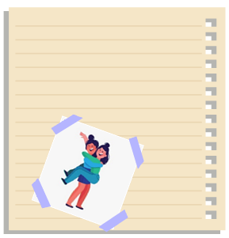
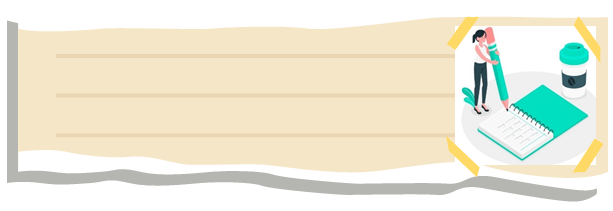

להוריד את הלחץ בבית
קצת שמש בחיים
תנו לגוף שלכם לספוג קצת מהחום של השמש ולקבל ממנה ויטמין D.
תצחקו
המוח עצמו מקבל הבנה בעזרת השרירים בפנים שאנחנו במצב טוב והלחץ ירד.
עסו את העין השלישית
עיסוי זה תורם להפגת מתחים ושחרור העצבים המפוזרים בראש.
שוקולד מריר
משחרר אנדורפינים שמרגיעים ומשפרים מיידית את מצב הרוח.
פירוק המטלות
כתבו לכם על דף את כל המטלות, בעיות והדברים שגורמים לכם ללחץ וסדרו אותם לדברים דחופים ודחופים פחות.
יין משמח לבב אנוש
תשתו לאט ובלגימות קטנות ותראו איך עם כל לגימה הלחץ יורד.
תכתבו, תפרקו הכל!
אם תשמרו את הדף עליו פרקתם, תוכלו לחזור אליו אחרי המשבר ולהבין שבסוף הכל עובר.
תנשמו עמוק
הבינו את הסיטואציה שבה אתם נמצאים, נסו להסתכל עליה מזווית אחרת.